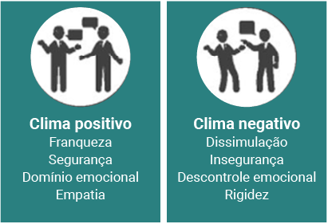

Negociação é um processo no qual partes com interesses, necessidades ou objetivos distintos buscam alcançar um consenso aceitável para todos. Trata-se de uma habilidade essencial para resolver conflitos, firmar acordos e encontrar soluções que beneficiem os envolvidos. Esse processo compreende comunicação, persuasão e, frequentemente, concessões mútuas.
Lewicki, Saunders, Barry (2014) descrevem a negociação como uma forma de tomada de decisão em que duas ou mais partes debatem sobre um assunto específico com o objetivo de resolver divergências relacionadas a seus interesses.
Negociação
Fonte: Freepik (c2010-2024)
Imagem vista de cima dos braços de três pessoas ao redor de uma mesa. Elas estão apertando as mãos. Há um laptop e alguns papéis sobre a mesa. As pessoas estão vestidas profissionalmente e parecem estar em uma reunião.
Em todas as profissões, é importante desenvolver habilidades de negociação. Para um designer de interiores, há diversos tipos de negociação realizados no dia a dia profissional, envolvendo clientes, prestadores de serviço, fornecedores, entre outros.
Com os clientes, é necessário negociar o custo total do projeto, justificando honorários, materiais, mão de obra e serviços, a fim de demonstrar o valor agregado. É preciso estabelecer expectativas claras sobre prazos de entrega, o que envolve negociar cronogramas realistas considerando todas as etapas do design e sua execução. Encontrar um meio-termo satisfatório é uma habilidade crítica, pois negociar especificações de design com clientes é tão essencial quanto suas expectativas, podendo comprometer o projeto.
Já com fornecedores e contratados, é fundamental garantir o cumprimento dos prazos, negociando cláusulas de penalidade por atrasos ou incentivos por entregas antecipadas. Os materiais devem atender às especificações requeridas e os serviços ser adequadamente executados. Isso inclui negociar termos de pagamento favoráveis, como pagamentos parciais em etapas, para ajudar na gestão do fluxo de caixa e na segurança financeira. Além disso, é importante estabelecer garantias sobre a qualidade dos materiais, a fim de proteger os interesses do cliente e do designer. Definir claramente o escopo do trabalho e negociar mudanças ou acréscimos evita mal-entendidos e garante sua conclusão conforme o planejado.
Negociações eficazes garantem que os projetos sejam concluídos dentro do prazo, do orçamento e das especificações, dando resultados positivos aos clientes e aumentando a probabilidade de recomendações para projetos futuros. Relações justas e eficazes com clientes, fornecedores e contratados constroem confiança, levando a melhores condições e colaboração contínua.
Assim, a habilidade de negociar permite ao designer de interiores gerenciar todas as facetas do projeto, assegurando seu sucesso e a satisfação de todas as partes envolvidas.
Existem três principais tipos de negociação: a distributiva (competitiva), a integrativa (colaborativa) e a cooperativa. Cada tipo de negociação é adequado a diferentes contextos e objetivos, e um bom negociador sabe quando e como aplicar cada abordagem.
A negociação distributiva é de soma zero, em que recursos são limitados e cada parte busca maximizar seu próprio ganho. Essas negociações competitivas envolvem uma única questão divisível, como o dinheiro. Nesse contexto, há uma oposição direta de interesses, caracterizada por uma disputa de soma zero, em que o ganho de uma parte implica na perda da outra. Não há incentivos para a cooperação entre as partes. Esse relacionamento competitivo pode levar a impasses, mas um acordo negociado geralmente é mais vantajoso, pois as partes buscam obter um resultado melhor do que teriam se não tivessem negociado.
Um designer de interiores é contratado para renovar a sala de estar de um cliente. O cliente tem um orçamento limitado e está tentando manter os custos baixos, enquanto o designer quer garantir uma remuneração justa pelo seu trabalho e cobrir todos os custos dos materiais e mão de obra.
A negociação distributiva resulta em um acordo no qual ambas as partes fazem concessões. O designer de interiores reduz seu preço final e ajusta o escopo do projeto, enquanto o cliente aceita pagar um pouco mais do que seu orçamento inicial, mas menos do que o preço original. Nesse tipo de negociação, o foco está na divisão de recursos fixos, resultando em um ganho para um lado às custas do outro.
A negociação integrativa é ganha-ganha. As partes trabalham juntas para encontrar uma solução que beneficie todos. Isso é comum em parcerias de longo prazo entre designers e fornecedores, nas quais ambos buscam construir uma relação de confiança e colaboração.
Essas negociações colaborativas são focadas em construir soluções criativas que satisfaçam todas as partes envolvidas. Questões de diferentes níveis de importância para as partes são incluídas, permitindo a obtenção de ganhos mútuos por meio de compromisso. Nesse contexto cooperativo, todas as partes obtêm benefícios, embora não necessariamente em quantidades iguais. Os negociadores se veem como parceiros, reconhecendo que cada um tem uma parte complementar na solução dos problemas em questão. Esse tipo de abordagem facilita o alcance dos resultados desejados.
Um designer de interiores está trabalhando em um grande projeto de reforma para um cliente corporativo e precisa adquirir móveis, luminárias e materiais de construção. O objetivo é garantir produtos de alta qualidade a preços razoáveis e estabelecer uma relação de confiança e colaboração com os fornecedores para projetos futuros. Ele propõe aos fornecedores uma parceria de longo prazo, oferecendo preferência para futuros projetos em troca de descontos por volume e opções de pagamento antecipado. Os fornecedores, em resposta, concordam em oferecer um desconto de 10% para pedidos em grandes volumes, personalizações de produtos conforme especificações do designer e garantias estendidas. Ambos também acordam o fornecimento inicial de amostras para garantir a qualidade desejada, além de condições favoráveis de devolução.
A negociação integrativa resultou em um acordo que beneficia ambas as partes. O designer obtém produtos de alta qualidade a preços competitivos e condições favoráveis, enquanto os fornecedores garantem uma parceria de longo prazo e um fluxo contínuo de pedidos. A colaboração estabelecida fortalece a relação de confiança entre o designer e os fornecedores para projetos futuros.
A negociação cooperativa é apoiada por terceiros neutros, como mediadores ou facilitadores, visando facilitar o diálogo entre as partes envolvidas, a fim de buscar soluções que atendam aos interesses de todos. Essa abordagem enfatiza a colaboração e o entendimento mútuo, buscando superar impasses e promover um ambiente de negociação mais construtivo e harmonioso. O papel do terceiro neutro é importante para ajudar as partes a explorarem interesses comuns, encontrarem pontos de convergência e alcançarem acordos que maximizem benefícios para todos.
Um designer de interiores está trabalhando exclusivamente no projeto de reforma residencial para um cliente, porém não foi contratado para o acompanhamento da obra. Durante a obra, surgem discordâncias significativas entre o cliente e o empreiteiro contratado em relação ao cronograma de obras e às especificações técnicas.
O designer, reconhecendo a necessidade de resolver esses conflitos de forma construtiva, sugere sua inclusão como mediador neutro acompanhando a execução da obra. Assim, atua como facilitador, promovendo um diálogo aberto entre todas as partes, ajudando a esclarecer mal-entendidos e explorar opções alternativas de design.
Durante as sessões de mediação, ele propõe soluções criativas que equilibram as necessidades estéticas do cliente com as limitações práticas do empreiteiro, como ajustes no projeto inicial que reduzem custos sem comprometer a qualidade final. Além disso, facilita a negociação de prazos e etapas do projeto para garantir um fluxo de trabalho harmonioso e eficiente.
Com a mediação eficaz do designer de interiores, as partes conseguem chegar a um acordo mutuamente aceitável. Isso não apenas resolve os conflitos iniciais, mas também fortalece a confiança e a colaboração entre todos durante a execução do projeto. O resultado é um ambiente renovado, que atende às expectativas estéticas do cliente e às exigências técnicas do empreiteiro, refletindo a eficácia da negociação cooperativa apoiada por um terceiro neutro.
Entender os tipos de negociação, distributiva, integrativa e cooperativa, é importante, pois ajuda a adaptar estratégias conforme o contexto. Enquanto a distributiva se concentra na competição por recursos limitados, a integrativa procura fazer acordos que beneficiem todas as partes envolvidas. Já a cooperativa é apoiada por mediadores neutros a fim de buscar soluções que promovam relações duradouras e vantagens mútuas. Dessa forma, a escolha do tipo adequado de negociação depende das metas específicas e das dinâmicas de relacionamento entre os negociadores.
A negociação é um processo dinâmico e interativo que requer habilidades de comunicação, persuasão e inteligência emocional. É fundamental em praticamente todas as áreas da vida profissional e pessoal, ajudando a chegar a acordos e resolver conflitos de forma eficaz.
A preparação e o planejamento são essenciais na negociação. Prática prévia e simulações ajudam a ajustar abordagens para maximizar as chances de chegar a acordos satisfatórios. Negociadores eficazes utilizam estratégias planejadas, como preparação detalhada, ancoragem de propostas e busca por pontos de convergência, para influenciar positivamente a outra parte e atingir seus objetivos de maneira eficiente. Para o designer, é importante ter conhecimento sobre o projeto, entender suas necessidades, ter clareza de seus limites e do objetivo da consultoria.
A técnica de negociação fundamentada em comunicação eficaz estabelece relações produtivas durante o processo de negociação. Comunicar-se de forma clara e transparente desde o início ajuda a evitar mal-entendidos e construir confiança mútua. Além disso, praticar a escuta ativa é decisivo para compreender as necessidades e as preocupações da outra parte, facilitando a identificação de interesses comuns e soluções que beneficiem ambos os lados.
Demonstrar empatia ao reconhecer as perspectivas e os sentimentos do outro contribui para criar um ambiente de negociação colaborativo. Ser assertivo na comunicação, expressando claramente suas próprias necessidades e interesses de forma respeitosa, é fundamental para garantir que suas preocupações sejam consideradas durante todo o processo.
A comunicação não verbal também desempenha um papel significativo na negociação, complementando a comunicação verbal para transmitir sentimentos, atitudes e intenções de forma mais ampla. Gestos, expressões faciais, postura corporal e contato visual são exemplos de elementos não verbais que podem influenciar as percepções e o entendimento durante uma negociação. Manter uma postura aberta e relaxada, fazer contato visual e usar gestos que reforcem as palavras pode aumentar a credibilidade e a conexão com o outra. Além disso, estar atento aos sinais não verbais da contraparte ajuda a interpretar suas reações e ajustar a abordagem para promover um diálogo mais eficaz e colaborativo.
A flexibilidade é uma técnica essencial na negociação, permitindo que as partes adaptem suas estratégias conforme a conversa evolui. Essa capacidade de adaptação ajuda a chegar a acordos mutuamente benéficos. A flexibilidade permite incorporar novas informações, ajustando propostas e expectativas para maximizar resultados positivos. Na técnica de negociação relacionada à flexibilidade, um designer de interiores pode demonstrar adaptabilidade e boa vontade de diversas maneiras. Ajustar propostas de design, materiais e cronogramas para atender às necessidades do cliente, oferecer alternativas que se encaixem no orçamento e no gosto do cliente, negociar prazos de entrega conforme as exigências do cliente, ser receptivo ao receber feedback e oferecer condições variadas de pagamento são práticas que mostram disposição para se adaptar e melhorar. Essa abordagem fortalece o relacionamento com o cliente, aumenta a confiança e facilita a colaboração, resultando em negociações mais eficazes e projetos que atendem às expectativas de todas as partes envolvidas.
As técnicas de persuasão para influenciar a outra parte a aceitar seu ponto de vista, demonstrando autoridade e expertise a fim de aumentar a credibilidade, ajudam a convencer os clientes sobre a qualidade e o valor do trabalho do designer, além de estabelecer um relacionamento de confiança e transparência, essencial para o sucesso de qualquer projeto de design de interiores.
O uso de dados concretos e argumentos lógicos reforça a credibilidade do designer, mostrando competência e conhecimento técnico. Projetos de sucesso, com imagens de antes e depois, são provas visuais e ratificam o impacto positivo de seu trabalho, ajudando seus clientes a visualizarem o potencial de transformação de seus próprios espaços. Já depoimentos de clientes satisfeitos funcionam como prova social, aumentando a confiança e a segurança do futuro cliente na contratação dos serviços do designer. Essas técnicas, aplicadas estrategicamente, aumentam a probabilidade de acordos favoráveis e duradouros.
A inteligência emocional é a habilidade de reconhecer, compreender e gerenciar tanto as próprias emoções quanto as emoções da outra parte envolvida. Isso permite uma abordagem mais consciente e estratégica durante o processo de negociação. A autoconsciência ajuda a controlar reações impulsivas, enquanto a autogestão mantém a calma e a objetividade, mesmo em situações de tensão. A empatia facilita o entendimento das necessidades e das perspectivas do outro, fortalecendo a construção de conexão e confiança mútua. Habilidades sociais, como a comunicação clara e a capacidade de resolver conflitos de maneira construtiva, são essenciais para alcançar acordos satisfatórios e duradouros. A inteligência emocional, portanto, não só melhora a eficácia da negociação, como também contribui para o estabelecimento de relacionamentos profissionais positivos e colaborativos.

Fatores que podem influenciar uma negociação
Fonte: Sathler (2018)
Duas placas lado a lado, com o seguinte conteúdo: placa 1: clima positivo, franqueza, segurança, domínio emocional e empatia. Placa 2: clima negativo, dissimulação, insegurança, descontrole emocional e rigidez.
Assim, colocar-se no lugar da outra parte para entender suas motivações e necessidades pode determinar se o clima da negociação será positivo ou negativo, dependendo da disposição dos negociadores.
Na atuação profissional de um designer de interiores, diversas situações comerciais de divergência podem surgir, sendo necessário ter habilidades de negociação e resolução de conflitos para gerenciar essas questões de maneira eficaz.
Analise algumas situações e soluções para casos comerciais de divergência que podem ocorrer no dia a dia profissional de um designer de interiores.
1) Situação: O cliente considera o custo do serviço elevado e questiona o preço.
Solução: Apresentar o detalhamento dos custos envolvidos, incluindo materiais, mão de obra, tempo de trabalho e outros serviços adicionais. Explicar o valor agregado do serviço, como personalização, qualidade e durabilidade do design. Demonstrar projetos anteriores e depoimentos de clientes satisfeitos para evidenciar o valor proposto.
2) Situação: O cliente exige um prazo de entrega mais curto do que o inicialmente acordado ou há atrasos na entrega do projeto.
Solução: Negociar prazos realistas, levando em consideração todas as etapas do projeto. Manter uma comunicação clara sobre o progresso e quaisquer imprevistos que possam causar atrasos. Se necessário, negociar cláusulas de penalidade por atrasos ou incentivos por entregas antecipadas para garantir o comprometimento de ambas as partes.
3) Situação: O cliente tem expectativas ou solicitações específicas que podem não ser práticas ou comprometer a estética ou a funcionalidade do design.
Solução: Discutir detalhadamente as especificações desejadas pelo cliente e apresentar alternativas viáveis que atendam às suas necessidades sem comprometer o design. Negociar um meio-termo que satisfaça ambas as partes, explicando os benefícios e as limitações de cada opção.
4) Situação: Durante a execução do projeto, o cliente solicita mudanças significativas que não estavam previstas no escopo inicial.
Solução: Reavaliar o escopo do trabalho e discutir os impactos das mudanças solicitadas em termos de custo, prazo e execução. Manter a transparência, estabelecendo um processo claro (datas para aprovação e número de alterações), negociar os termos das mudanças, incluindo ajustes financeiros e de cronograma, para garantir que ambas as partes estejam de acordo com as novas condições.
Em todas essas situações, a habilidade de negociação e a capacidade de resolver conflitos são essenciais para se chegar a acordos satisfatórios a todas as partes envolvidas. Manter uma comunicação clara e transparente, praticar a escuta ativa e demonstrar flexibilidade são estratégias fundamentais para gerenciar divergências de maneira eficaz.
A negociação é essencial ao designer de interiores, pois impacta diretamente o sucesso dos projetos e a satisfação dos clientes. Ao negociar preços justos, prazos realistas e especificações dos projetos, o designer garante que todas as partes envolvidas estejam alinhadas e satisfeitas. Técnicas como flexibilidade, comunicação eficaz, inteligência emocional e persuasão proporcionam soluções mutuamente benéficas, construindo relacionamentos duradouros. Portanto, dominar a arte da negociação é indispensável para o sucesso profissional e a realização de projetos de alta qualidade no campo do design de interiores.
Que você, futuro designer de interiores, faça excelentes negócios utilizando todos esses conhecimentos!